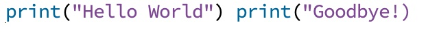

A programming language is a language that human programmers use to give specific instructions to a computer. In some ways, programming languages are similar to natural languages, such as English, French, Russian, Punjabi, and many others. Both types of languages have vocabularies with specific meanings and syntax which specifies how words combine with punctuation. However, natural language does not need perfect syntax in order to be understood by an audience. With a programming language, you do not have this luxury; if you make a single mistake in your syntax, the computer will not understand you at all. Another difference is that natural language can be ambiguous: the same word can have multiple meanings or might be interpreted differently by a different audience. With a programming language, there can be no ambiguity; every word or statement has one and only one meaning.
For this class, we will use a programming language called Python. A Python program consists of one or more valid Python statements, each on a separate line. Line breaks (i.e. the thing you get when you hit the ‘return’ or ‘enter’ key on most keyboards) separate statements in Python. We will see later that there is also indentation and other forms of “white space” . The following is a simple, but complete, Python program:
The only effect of this program is to print the phrase "Hello world!" on the computer monitor. The word print is part of Python’s built-in vocabulary. It is a command that displays text to the screen. It’s important to note that Python, as a language, is case-sensitive, so print and Print are not the same things. In general, if you’re trying out any of the examples you see in these readings, you should type them exactly as they appear here, including case and punctuation. Don’t worry too much about what the brackets or quotation marks mean yet; we’ll get to why you need those later. For now, they’re just part of the proper Python syntax for the print command.
The following is an example of an incorrect Python program:
Although on their own, both print(“Hello world!”) and print(“Goodbye!”) are valid Python statements, the syntax rules of Python insist that you can’t put them on the same line. If you try to ask a computer to run this Python program, you’ll get an error. Don’t expect the computer to suggest the correction of just moving the second statement to a new line. Computers, as a general rule, aren’t very good at telling you why your syntax is incorrect, which can be understandably frustrating for novice programmers. Just remember, the computer isn’t trying to make things difficult for you, it simply isn’t anywhere near as smart as you are!